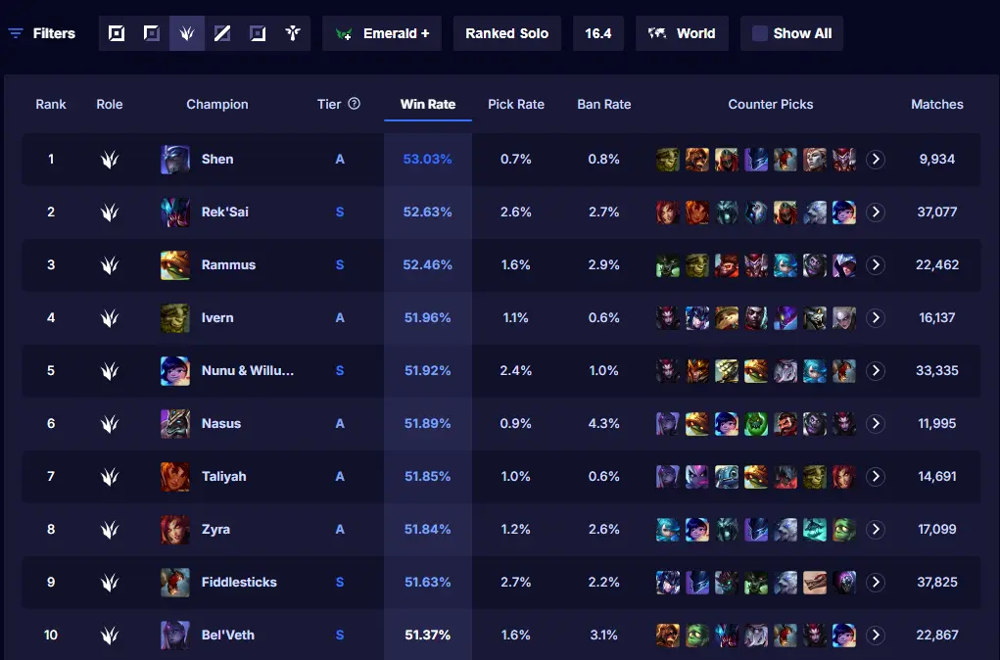
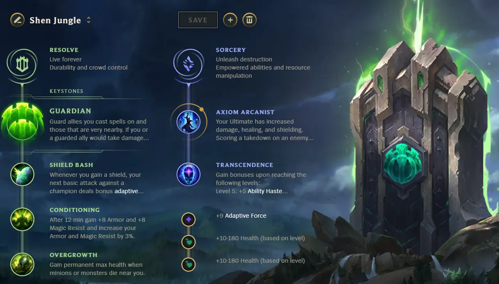

E-Sports News
LEAGUE OF LEGENDS
“Varus foi buffado demais”, diz rioter sobre mudanças no Patch 26.05
A Riot já detalhou quais mudanças devem chegar na próxima atualização do League of Legends. O rioter Phroxzon detalhou em seu perfil no X (ex-Twitter) os fortalecimentos para a Lilia e os nerfs para Varus, além de divulgar o que a desenvolvedora pretende alterar em 12 campeões e dois itens.
O porta-voz da Riot comentou sobre o motivo dos nerfs de Varus e Neeko. Segundo Phroxzon, o atirador e a suporte têm muita presença no competitivo, e a desenvolvedora busca abaixar seus níveis de força nas mãos dos profissionais:
"A Neeko tem sido forte no competitivo há um tempo, sem estar forte demais no jogo comum. Estamos tirando parte do poder da visão que ela gera, algo melhor aproveitado no Pro Play, sem impactar demais o jogo regular. (…) O Varus foi buffado demais há algum tempo, então estamos praticamente revertendo o buff no dano do Q O Varus de letalidade tem sido o ADC mais forte no competitivo, então estamos nerfando para que não domine o meta profissional"
Lista completa de mudanças:
- Garen — Duração do Q ms: 1–3.6 → 1.4–3.6; Dano do E: 4–16 + 38–50% AD total → 4–16 + 40–52% AD total
- Lee Sin — Dano base do Q1/Q2: 60–180 → 65–185
- Lillia — P: Taxa de cura em monstros aumentada para 15% AP de 9% AP Q: Taxa de AP aumentada para 35% AP de 30% AP R: Dano base reduzido para 100/150/200 + 40% de 150/200/250 + 45%; Tempo de recarga aumentado para 150/130/110 de 140/120/100
- Mel — Dano por projétil adicional do Q: 5–9 → 5–13; Dano base do R: 100/150/200 → 125/200/275; Modificador de minion do P: 0.6x → 0.5x
- Nocturne — Tempo de recarga do P: 13 → 12; Bônus de ms do Q: 15–35% → 20–40%
- Volibear — (mudanças em andamento, detalhes serão publicados separadamente)
Shen se Torna o Jungler com Maior Taxa de Vitórias em Emerald+
Shen subiu inesperadamente ao topo do ranking de selva do Emerald+, agora mantendo a maior taxa de vitória na função. Esse aumento ocorreu logo após o criador de conteúdo xPetu compartilhar uma build de selva matematicamente otimizada que redefine como o ninja ioniano funciona fora da rota superior.
De Off-Meta a Selva S-Tier Tradicionalmente visto como um Top laner situacional, Shen raramente foi considerado um caçador de selva meta. No entanto, dados recentes do Emerald+ mostram ele liderando a função com uma taxa de vitória de 53,03%, superando escolhas de selva já estabelecidas.

xPetu recentemente publicou um vídeo no YouTube mostrando a build completa em ação, incluindo uma limpeza de selva extremamente rápida que foi concluída em apenas 2:39. O vídeo demonstra tanto a eficiência do caminho quanto a configuração focada em durabilidade que permite a Shen se manter saudável enquanto acelera em direção a um impacto precoce no mapa. A Configuração de Runas Otimizada O núcleo da estratégia gira em torno da escalabilidade de durabilidade e amplificação de escudo:
Primária – Determinação
- Guardião
- Golpe de Escudo
- Condicionamento
- Crescimento Excessivo
Opções Secundárias
- Feitiçaria: Axioma Arcano + Transcendência (apenas quando o time inimigo não tem um usuário de Presas da Serpente)
- Inspiração: Calçados Mágicos + Perspicácia Cósmica (preferido se o inimigo tiver um usuário de Presas da Serpente)
